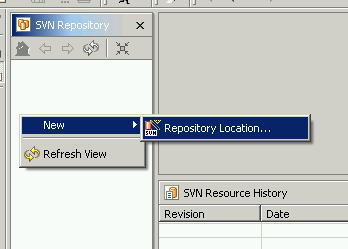
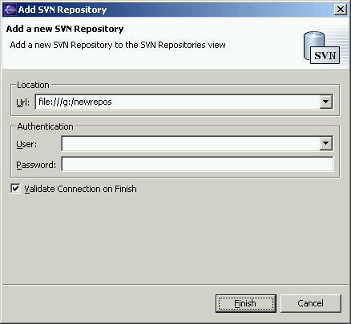
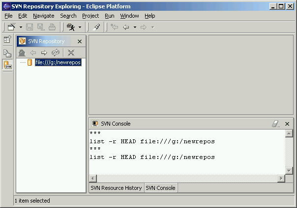

Before you can begin working with a Subversion repository you must define that repository to Subclipse. This simply involves entering the URL and possibly the login credentials for the repository. The repository itself should already exist and be accessible.
You create and work with your repository locations from the SVN Repository View. Invoke the Create New Repository Location wizard either by clicking the view toolbar button or by right clicking inside the view and selecting New > Repository Location...

This will bring up a dialog that will prompt you for a repository location URL, username and password. Enter the URL of the repository you want to connect to (in this example we will use the Subclipse repository URL). Before entering your username and password, you may want to first read the advanced topic on Managing Username and Passwords. Typically it is easiest to leave these fields blank and allow Subversion to prompt for a username and password when it needs it, and then you can also optionally allow Subversion to cache and encrypt your password.

The repository dialog also has a place for entering the Root URL of the repository. Click the Browse... button to pick the root URL from a list based on the URL entered. If you do not specify a value for the root URL, Subclipse will default it to the same value entered as the URL. The root URL is used to calculate the url_short project decorator and also for some of the Subversion API calls that are made, such as retrieving the changed paths for a specific revision.
After you click finish, the wizard will create the location. Expand the location to see the contents for the given URL.

SVN Repository Exploring Perspective
How do I configure an HTTP proxy connection?
How do I specify SSL client certificates?
How do I configure an svn+ssh:// connection?